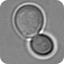
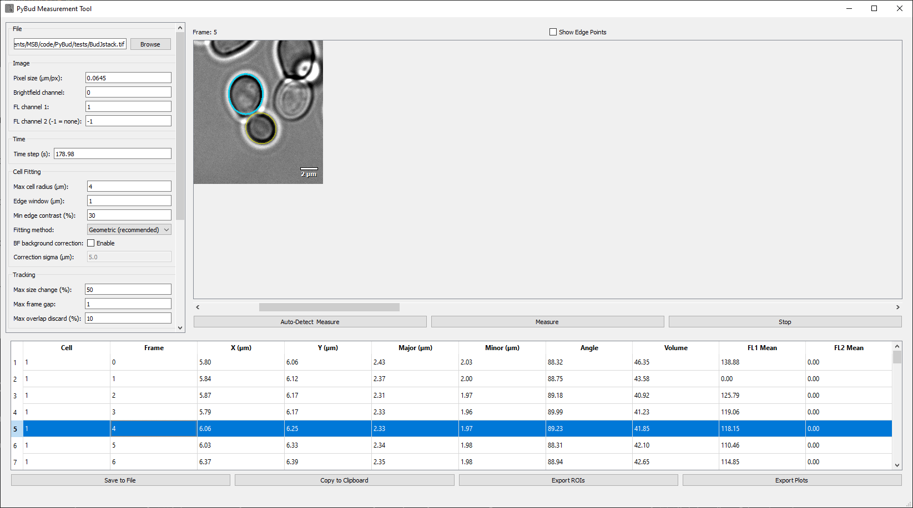
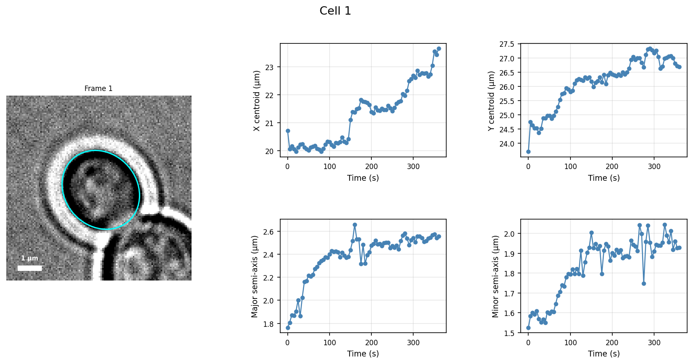
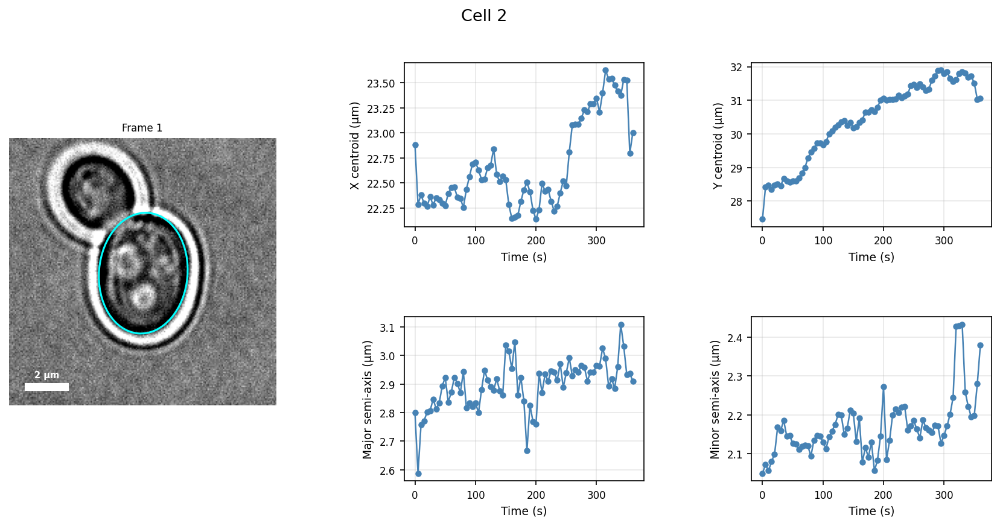

PyBud — Cell Tracking & Measurement ToolPyBud is a Python tool for tracking and measuring yeast cells in brightfield time-lapse microscopy. It fits ellipses to cell boundaries frame-by-frame using radial edge detection, links detections into tracks across frames, and exports quantitative measurements alongside publication-quality plots. It is inspired by the BudJ ImageJ plugin but is fully written in Python and does not require ImageJ or Z-stacks.
Python 3.8 or later. Install dependencies with pip:
pip install PyQt5 numpy scipy scikit-image tifffile roifile matplotlib openpyxl pandas
Clone the repository and launch the GUI:
git clone https://github.com/MembraneEnzymology/PyBud.git
cd PyBud
python pybud_gui.py
PyBud/
├── pybud/ # importable Python package
│ ├── tracker.py # PyBud tracking engine
│ ├── autodetect.py # AutoDetect — Hough-based cell detection
│ ├── plots.py # Plots — figure export
│ ├── cell.py # Cell — per-frame measurement
│ ├── ellipse.py # Ellipse — boundary fitting
│ └── fluorescence.py # Fluorescence — channel statistics
├── pybud_gui.py # PyQt5 graphical interface
├── autotrack.py # command-line pipeline
├── tests/ # example scripts and small test data
└── images/ # screenshots and example output figures
.tif file. Pixel size and time step are auto-populated from the file metadata when available.
The window is divided into three areas:
| Area | Description |
|---|---|
| Left panel | All parameters, grouped by function. Scrollable when the panel is narrow. |
| Image panel | Brightfield (or fluorescence) image with fitted ellipses, scale bar, and frame navigation. |
| Results table | Per-frame measurements for all tracked cells. Click any row to jump to that frame. |
| Action | Effect |
|---|---|
| Left-click on cell | Place a seed point (green cross) |
| Left-click on existing cross | Remove that seed |
| Right-click | Zoom in ×1.25 |
| Right-click + Shift | Zoom out ×0.75 |
| Scrollbar | Navigate through frames |
| Channel dropdown | Switch between brightfield and fluorescence channels |
A scale bar is shown in the bottom-right corner of the image and updates automatically when zooming. An orange dashed line connects a mother cell to its bud whenever both are visible in the same frame.
Selecting any row in the results table immediately jumps the image to the corresponding frame and highlights that cell's ellipse in cyan. All other fitted cells remain yellow.
| Field | Description |
|---|---|
| File | Path to the .tif image stack. Use Browse to open. Pixel size and time step are read from the file metadata automatically. |
| Field | Default | Description |
|---|---|---|
| Pixel size (µm/px) | 0.0645 | Physical size of one pixel in micrometres. Auto-read from TIF metadata (OME-XML, ImageJ tags, or TIFF XResolution). |
| Brightfield channel | 0 | Zero-based channel index used for edge detection. |
| FL channel 1 | 1 | First fluorescence channel. Mean intensity inside the fitted ellipse is measured. Set to −1 to disable. |
| FL channel 2 | −1 | Second fluorescence channel. Set to −1 to disable. |
| Field | Default | Description |
|---|---|---|
| Time step (s) | 1.0 | Time between frames in seconds. Used as the X-axis in exported plots. Auto-read from TIF metadata when available. |
| Field | Default | Description |
|---|---|---|
| Max cell radius (µm) | 4 | Maximum expected cell radius. Radial intensity profiles are sampled out to this distance from the seed point. |
| Edge window (µm) | 1 | Width of the sliding window used to detect the dark→bright transition at the cell wall. |
| Min edge contrast (%) | 30 | Minimum contrast relative to the image background for an edge to be accepted. Increase if false edges appear inside the cell. |
| Fitting method | Geometric | Geometric — non-linear least-squares fit (more accurate, recommended). Algebraic — direct linear fit (faster, less robust for imperfect edges). |
| BF background correction | off | Subtracts a Gaussian background from the brightfield channel before edge detection. Useful for uneven illumination. |
| Correction sigma (µm) | 5.0 | Spatial scale of the Gaussian background estimate. Should be larger than the cell diameter. |
| Field | Default | Description |
|---|---|---|
| Max size change (%) | 50 | Maximum permitted change in major or minor axis between consecutive frames. Detections exceeding this are treated as missed frames. |
| Max frame gap | 1 | Consecutive missed frames tolerated before a track terminates. Missed frames are filled by linear interpolation (shown as open markers in exported plots). |
| Max overlap discard (%) | 10 | If two fitted ellipses in the same frame overlap by more than this fraction of the smaller ellipse's area, the one with the higher track ID is discarded. |
Used only by Auto-Detect & Measure. Has no effect on plain Measure.
| Field | Default | Description |
|---|---|---|
| Min cell radius (µm) | 1.5 | Minimum radius searched by the circular Hough transform. |
| Max cell radius (µm) | 4.0 | Maximum radius searched by the circular Hough transform. |
| Max cells per frame | 10 | Upper limit on candidate circles per frame. Set this to the expected number of cells to reduce false positives. |
| Detection threshold (0–1) | 0.5 | Minimum Hough accumulator score. Increase toward 1.0 to accept only strong, well-defined circles. |
| Match distance (µm) | 8.0 | A candidate is linked to an existing track if its centroid is within this distance of the track's last known position. |
After every fitting run PyBud automatically checks whether any track originated as a bud from an existing cell. Two criteria must both be satisfied at the frame where the daughter first appears:
(r_mother + r_daughter) × bud_distance_factor of the mother's centroid.r_mother × bud_size_ratio.The closest qualifying candidate is recorded as the mother. Results appear as an orange dashed line connecting centroids in the image. The Mother Cell column in the results table (disabled by default; enable via Output Column Settings) shows the mother's track ID, or — if none was found.
| Field | Default | Description |
|---|---|---|
| Bud distance factor | 1.2 | Proximity multiplier: (r_m + r_d) × factor. Increase if buds appear further from the mother edge. |
| Bud size ratio | 0.8 | Daughter must be smaller than r_mother × ratio. Decrease to require a larger size difference. |
Seeds can be added or removed at any time. Clicking Measure always recomputes from scratch using the current seeds and settings.
Tip: If auto-detection picks up chip walls or agarose, lower Max cells per frame to the expected number of real cells, or raise Detection threshold to 0.7–0.8.
Click Stop at any time to interrupt fitting. Results computed up to that point are kept.
Each row corresponds to one cell on one frame. Columns can be toggled via Output Column Settings.
| Column | Unit | Description |
|---|---|---|
| Cell | — | Track ID (assigned in order of first detection) |
| Mother Cell | — | Track ID of the mother cell, or — if no mother detected. Disabled by default. |
| Frame | — | Zero-based frame index |
| Time | s | Frame index × time step |
| X | µm | X coordinate of the ellipse centroid |
| Y | µm | Y coordinate of the ellipse centroid |
| Major | µm | Major semi-axis of the fitted ellipse |
| Minor | µm | Minor semi-axis of the fitted ellipse |
| Angle | ° | Rotation angle of the major axis |
| Volume | µm³ | Approximate spherical volume: (4/3)π · ((a+b)/2)³ |
| Edge width | µm | Mean width of the detected cell boundary |
| FL1 Mean | a.u. | Mean fluorescence intensity inside the ellipse (channel 1) |
| FL2 Mean | a.u. | Mean fluorescence intensity inside the ellipse (channel 2) |
Clicking any row jumps the image to that frame and highlights the cell in cyan.
Saves the full table as CSV or Excel (.xlsx). Select the format in the save dialog.
Copies the table as tab-separated text, ready to paste into Excel or any spreadsheet.
Saves all fitted ellipses as an ImageJ-compatible .zip ROI file. Open it in Fiji via the ROI Manager to overlay ellipses on the original images.
Generates one PNG per tracked cell, saved to a folder of your choice. Each figure contains:
Interpolated frames are shown as open markers.


Export Settings saves all current parameter values to a JSON file. Import Settings restores them in a future session — useful for keeping consistent settings across experiments.
autotrack.py is a headless pipeline that detects cells in frame 0 via Hough transform and tracks them forward — no GUI required. It is useful for batch processing or running on a compute server.
python autotrack.py <image.tif> [options]
# Detect 3 cells, let the script read pixel size from TIF metadata
python autotrack.py tests/BudJstack.tif --n-cells 3
# Provide pixel size explicitly and save to a specific CSV
python autotrack.py movie.tif --pixel-size 0.064 --n-cells 2 --output results.csv
| Option | Default | Description |
|---|---|---|
--pixel-size FLOAT |
from metadata | µm per pixel |
--n-cells INT |
2 | Cells to detect in frame 0 |
--cell-radius FLOAT |
4.0 | Max search radius (µm) |
--edge-size FLOAT |
1.0 | Edge-detection window (µm) |
--edge-rel-min INT |
30 | Minimum edge contrast (%) |
--fitting-method STR |
geometric |
algebraic or geometric |
--min-cell-radius FLOAT |
1.5 | Min cell radius for Hough search (µm) |
--max-cell-radius FLOAT |
4.0 | Max cell radius for Hough search (µm) |
--bf-channel INT |
auto | Override brightfield channel index |
--max-size-change FLOAT |
0.5 | Max fractional radius change per frame (0 = disabled) |
--max-gap INT |
1 | Max consecutive missed frames to bridge |
--output PATH |
<image>_tracks.csv |
Output CSV path |
The script prints a per-track summary to the console and saves a CSV with one row per cell per frame.
Cell not found on some frames - The cell may drift out of the search radius — increase Max cell radius. - Uneven illumination can obscure the cell edge — enable BF Background Correction with a sigma of ~5 µm.
Duplicate tracks for the same cell - The Max overlap discard filter (default 10%) removes duplicates. Increase the threshold if duplicates remain.
Auto-detect finds chip structures instead of cells - Lower Max cells per frame to the number of real cells expected. - Raise Detection threshold to 0.7–0.8 to accept only strong candidates.
Tracks terminate too early - Increase Max frame gap to bridge more missed frames. - Loosen Max size change (%) if the cell grows or shrinks rapidly.
Pixel size or time step are wrong after loading - Values are auto-read from TIF metadata (OME-XML, ImageJ tags, TIFF resolution). Override them manually in the settings panel and click Adjust Settings.
PyBud can be used as a Python library without the GUI, making it easy to integrate into batch scripts and analysis pipelines.
All public classes are importable directly from the pybud package:
from pybud import PyBud, AutoDetect, Plots
from pybud import Cell, Ellipse, Fluorescence # lower-level objects
from pybud import export_cell_plots # convenience shortcut
| Module | Class | Purpose |
|---|---|---|
pybud.tracker |
PyBud |
Core tracking engine |
pybud.autodetect |
AutoDetect |
Hough-based cell detection |
pybud.plots |
Plots |
Figure export |
pybud.cell |
Cell |
Per-frame ellipse fitting and measurement |
pybud.ellipse |
Ellipse |
Algebraic and geometric ellipse fitting |
pybud.fluorescence |
Fluorescence |
Fluorescence channel statistics |
PyBud — tracking engine| Attribute | Type | Default | Description |
|---|---|---|---|
img |
ndarray (T, C, H, W) |
None |
Image stack. Set via load() or assign directly. |
pixel_size |
float |
0.0645 |
µm per pixel |
time_step |
float |
1.0 |
Seconds per frame |
time_unit |
str |
"s" |
Time unit label used in exported plots |
bf_channel |
int |
0 |
Brightfield channel index |
fl_channels |
list[int] |
[1] |
Fluorescence channel indices |
cell_radius |
float |
4 |
Max radial search distance from seed (µm) |
edge_size |
float |
1 |
Edge-detection sliding-window width (µm) |
edge_rel_min |
float |
30 |
Minimum relative edge contrast (%) |
fitting_method |
str |
"algebraic" |
"geometric" or "algebraic" |
bg_correction_sigma |
float |
0.0 |
Gaussian sigma for BF background subtraction (µm; 0 = off) |
max_gap |
int |
1 |
Max consecutive missed frames before track termination |
max_size_change |
float |
0.5 |
Max fractional radius change per frame (0 = disabled) |
overlap_threshold |
float |
0.1 |
Overlap fraction above which duplicate tracks are removed |
bud_distance_factor |
float |
1.2 |
Proximity multiplier for mother-daughter detection |
bud_size_ratio |
float |
0.8 |
Size ratio threshold for mother-daughter detection |
min_detect_radius_um |
float |
1.5 |
Minimum cell radius for auto-detection (µm) |
max_detect_radius_um |
float |
4.0 |
Maximum cell radius for auto-detection (µm) |
n_cells_max |
int |
10 |
Maximum Hough candidates per frame |
hough_threshold |
float |
0.5 |
Minimum Hough accumulator score (0–1) |
match_distance_um |
float |
8.0 |
Max inter-frame displacement to keep as same track (µm) |
cells |
list[Cell] |
[] |
Results after fit_cells() |
mother_ids |
dict |
{} |
{child_track_id: mother_track_id} (−1 = no mother) |
selections |
dict |
{} |
{frame: [(x, y), ...]} seed points |
load(path) → self
Load a TIFF stack and auto-populate pixel_size and time_step from embedded metadata (OME-XML, ImageJ tags, or TIFF XResolution). Normalises the array to (T, C, H, W). Returns self for method chaining.
add_selection(frame, x, y)
Add a seed point at pixel (x, y) on frame. PyBud tracks this cell forward through all subsequent frames.
remove_selection(frame, x, y)
Remove the nearest seed to (x, y) on frame (within selection_radius pixels). Returns True if a seed was removed.
fit_cells(callback=None)
Track all current seeds and populate self.cells. Runs fitting in parallel threads. After fitting, performs gap filling (linear interpolation), overlap filtering, and mother-daughter detection. The optional callback(frame) is called after each frame for progress reporting.
clear()
Remove all seeds, fitted cells, and cached results.
stop()
Signal a running fit_cells() to stop after the current frame (thread-safe).
Cell — per-frame measurementEach element of pybud.cells is a Cell object (or a lightweight interpolated substitute for gap frames):
| Attribute | Unit | Description |
|---|---|---|
id |
— | Track ID |
frame |
— | Zero-based frame index |
cell_found |
bool |
Whether the fit succeeded |
interpolated |
bool |
True for linearly gap-filled frames |
x_centroid |
µm | Centroid X |
y_centroid |
µm | Centroid Y |
major |
µm | Major semi-axis |
minor |
µm | Minor semi-axis |
angle |
° | Rotation angle of the major axis |
edge_width |
µm | Mean detected boundary width |
volume |
µm³ | Approximate spherical volume: (4/3)π·((a+b)/2)³ |
mother_id |
— | Track ID of mother cell, or −1 |
fluorescence |
list[Fluorescence] |
One entry per FL channel |
Each Fluorescence object exposes: mean, sd, median, min, max, background, mean_bg_subtracted, integrated_density, area, brightest_10, brightest_25, brightest_50.
AutoDetect — Hough-based detectionAutoDetect runs entirely in NumPy / scikit-image with no Qt dependency. It can be used in scripts or called from autotrack.py.
AutoDetect().detect(pb, frame_callback=None) → int
Two-phase detection on all frames of pb.img. Phase 1: find candidate circles per frame using the Hough transform. Phase 2: link candidates across frames into tracks; add a seed to pb.selections only when a new track begins. Returns the total number of seeds placed. All detection parameters are read from the PyBud instance.
AutoDetect.detect_frame(bf_frame, min_r_px, max_r_px, n_max=10, threshold=0.5) → list
Static method. Runs the Hough transform on a single brightfield frame (after percentile normalisation and large-scale background subtraction). Returns a list of (x, y) pixel positions.
Plots — figure exportPlots uses matplotlib only and has no Qt dependency.
Plots.export_cell_plots(cells, time_step, time_unit, out_dir, img=None, bf_channel=0, pixel_size=1.0) → int
Generates one PNG per cell track. When img is provided, a cropped brightfield snapshot with ellipse overlay and scale bar is placed to the left of a 2×2 time-series grid. Returns the number of files saved.
export_cell_plots is also available as a top-level shortcut: from pybud import export_cell_plots.
import pandas as pd
from pybud import PyBud
pb = PyBud(fitting_method="geometric")
pb.load("my_movie.tif") # pixel_size and time_step auto-read from metadata
pb.bf_channel = 0
pb.fl_channels = [1]
pb.cell_radius = 4 # µm
pb.edge_rel_min = 30
pb.add_selection(0, 150, 200) # frame 0, pixel (x=150, y=200)
pb.add_selection(0, 320, 185)
pb.fit_cells()
rows = []
for cell in pb.cells:
if not cell.cell_found:
continue
fl = cell.fluorescence[0] if cell.fluorescence else None
rows.append({
"cell_id": cell.id,
"mother_id": cell.mother_id,
"frame": cell.frame,
"time_s": cell.frame * pb.time_step,
"x_um": cell.x_centroid,
"y_um": cell.y_centroid,
"major_um": cell.major,
"minor_um": cell.minor,
"volume_um3": cell.volume,
"fl1_mean": fl.mean if fl else None,
"interpolated": getattr(cell, "interpolated", False),
})
df = pd.DataFrame(rows)
df.to_csv("results.csv", index=False)
print(df)
from pybud import PyBud, AutoDetect
pb = PyBud().load("my_movie.tif")
pb.bf_channel = 0
pb.fl_channels = [1]
# Tune detection parameters if needed
pb.min_detect_radius_um = 1.5
pb.max_detect_radius_um = 4.0
pb.n_cells_max = 5
pb.hough_threshold = 0.6
n_seeds = AutoDetect().detect(pb)
print(f"Placed {n_seeds} seed(s)")
pb.fit_cells()
for cell_id, mother_id in pb.mother_ids.items():
if mother_id >= 0:
print(f"Cell {cell_id} is a bud of cell {mother_id}")
import tifffile
from pybud import AutoDetect
img = tifffile.imread("my_movie.tif") # (T, C, H, W)
pixel_size = 0.0645
hits = AutoDetect.detect_frame(
bf_frame = img[0, 0],
min_r_px = 1.5 / pixel_size,
max_r_px = 4.0 / pixel_size,
n_max = 10,
threshold = 0.5,
)
print("Detected cells at (x, y) px:", hits)
from pybud import PyBud, Plots
pb = PyBud().load("my_movie.tif")
pb.add_selection(0, 150, 200)
pb.fit_cells()
found = [c for c in pb.cells if c.cell_found]
n = Plots.export_cell_plots(
found, pb.time_step, pb.time_unit, "output_plots/",
img=pb.img, bf_channel=pb.bf_channel, pixel_size=pb.pixel_size,
)
print(f"Saved {n} plot(s).")